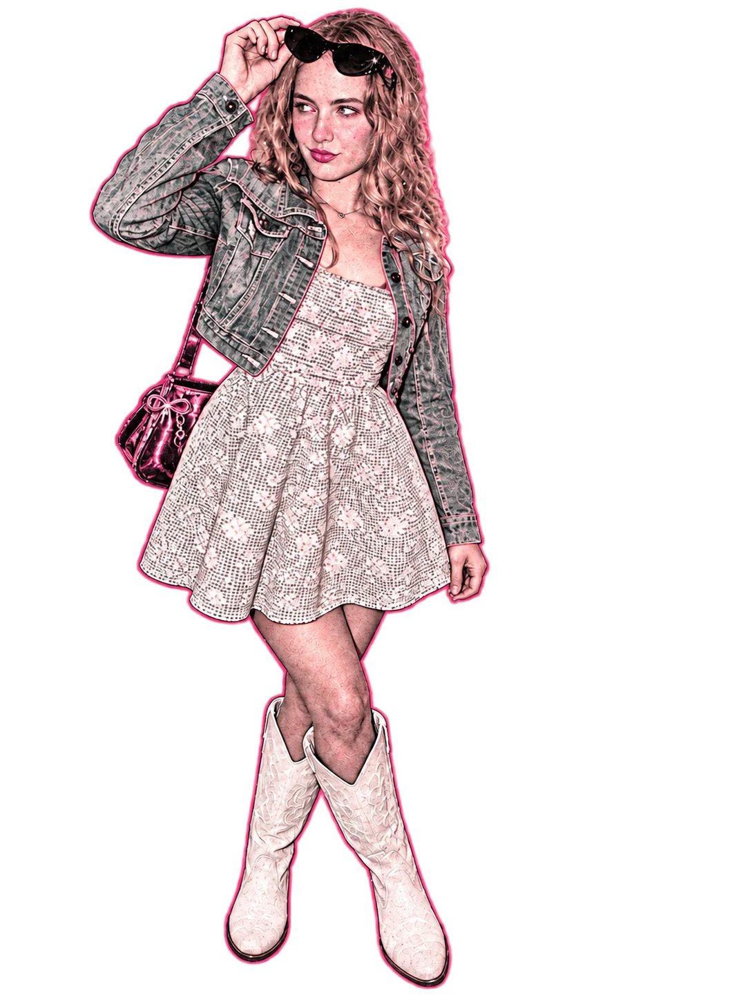

About Me
I'm a Texas-based creator with a love for gaming, filmmaking, photography, and just about anything that gives me an excuse to be creative. Under Teicheir, I share a little bit of everything: gaming and personal vlogs on YouTube, spontaneous videos and everyday humor on TikTok, and photography and visual storytelling on Instagram.
I've never been particularly interested in limiting myself to one kind of content. I enjoy experimenting with different ideas, documenting the ordinary and occasionally extraordinary parts of life, and finding new ways to express my perspective.
Teicheir is where all those interests come together. It's a personal creative space, a growing collection of my work, and a place to connect with people who might want to make something together.